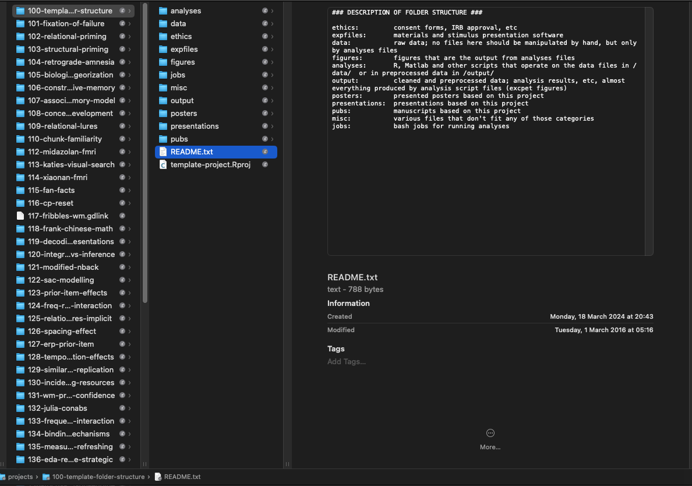
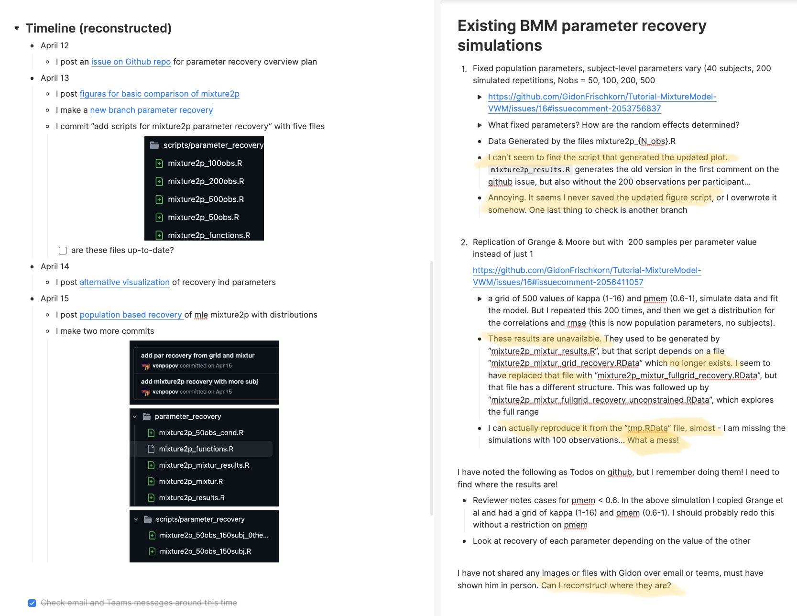
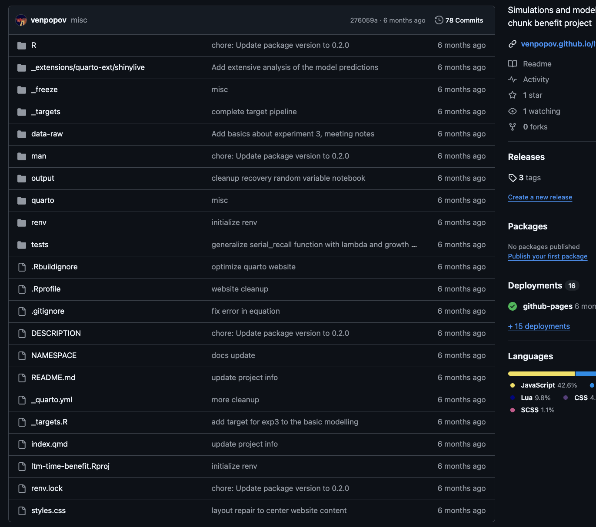

![]()
I have to finally admit it to myself - my research workflows have been breaking down and it’s time to get serious about change. I’ve been trying to incorporate better coding practices, modern reporting pipelines, and reproducible workflows into my research projects, but it’s been a struggle. The complexity of the tools, the sheer number of moving parts, and the interactions between them have been overwhelming. I’ve spent more time debugging my workflow than actually doing research. There has to be a better way.
The Comfort of Old Habits
For many years I had relatively stable workflows for project organization and version control of my research projects. They were never perfect, and given the state of reproducibility in academic psychology, likely much better than the status quo. Since 2014, I’ve been using systematic project template folders, project-based organization, programmatic data wrangling, version control with Git and GitHub, and I’ve dabbled in literate programming tools such as Jupyter Notebooks and R Markdown. I’ve taugth these tools in graduate courses. I knew my way around a command line, and on the rare occasions I needed it, I could run demanding analyses on the Carnegie Mellon computing cluster. I was able to get things done efficiently while maintaining a somewhat decent level of reproducibility.

My comfortable routine started changing last year, gradually at first, as I began working on my first R package. What began as a side project quickly evolved into something that preoccupied me for months. This was partly because I had a fantastic collaborator, working with whom was an exhilarating, idea-bootstrapping experience. But collaborating also meant I had to up my game — I couldn’t rely on the shortcuts and hacks I’d developed over the years. For the first time, I had to learn about proper documentation, testing, and collaborative workflows.
When you’re working on a package, you’re not just writing code for yourself—you’re writing code for others to use. This means writing clear and concise documentation, creating tests to ensure your code works as expected, and developing code that is modular and easy to understand. And you have to do it in a way that makes collaboration less painful.
The Pitfalls of Self-Taught Coding
The painful truth is that proper computational skills are rarely taught in academic programs (at least in psychology). Many of us are self-taught, each with our own quirky ways of doing things. Tools and processes that are standard fare in software development are often foreign to us. So, we muddle through, doing the best we can with what we have. My use of GitHub was a glorified Dropbox, and my coding practices, if you could call them that, were a mishmash of concepts I picked up from various tutorials and blog posts. It mostly worked, but even now I am barely able to reproduce my own work from a few years ago. Broken package dependencies, uncertain code order, and the utter lack of systematic documentation have made my old projects a nightmare to revisit.
Maybe I’m exaggerating a bit, but the reality is that as my career has progressed, my projects have grown in number and complexity, and it’s become more and more frustrating to keep track of everything. My existing workflow sat squarely in the middle of “the reproducibility iceberg” - better than most, but I was starting to feel cold.
Thankfully, while formal education in this area still lags behind, the online landscape is now rich with resources. Over the last year, I’ve been trying to incorporate better coding practices, Quarto websites reporting for projects, and renv for package management. It’s been an uphill battle, consuming a lot of time and energy.
The Tension Between Efficiency and Reproducibility
The hardest part is not learning new tools but unlearning old habits and deconstructing my mental models of code, data, and reporting. One of the reasons I love coding in R is the incredibly quick iteration cycle and feedback loop. The ability to have an idea and, within minutes, simulate, visualize, and analyze it often feels like a superpower.
The problem is that this same superpower also makes it so easy to be sloppy. Who has time and patience for carefully curating a reproducible workflow when that puts a delay between your idea and its realization?
The thing is, I am no longer a grad student chasing down any odd idea that comes my way. As fun as the wild west of coding can be, it’s not sustainable for a long-term research program, especially when other people depend on you. And let’s be honest, I also need to be kinder to my future self.
What a Mess
Case in point: I just resumed work on a simulation project that I last touched in April. Despite all my best intentions, I was shocked to find that I couldn’t reproduce a set of figures I had sent to my collaborator at the time. Even worse, it took me a full day to even figure out what I was doing back then.
Why did this happen? There are many culprits, but part of it is that while I coded all the simulation scripts locally, I ran the simulations on a cluster because they were very computationally demanding. At the time, I had no established workflow for sharing intermediate data objects between my remote and local codebases. My attempts to reconstruct what had happened have driven me to the brink of madness. Trust me when I say that I’ve spent more time trying to figure out what I did than it would have taken me to redo everything from scratch.

To avoid scenarios exactly like this, in the last six months I’ve been experimenting with the targets package. Targets is a pipeline toolkit for R that helps you manage the dependencies between your scripts and data objects. It’s a bit like make for R, but with a lot of bells and whistles. I even implemented it for a couple of other projects.
When combined with renv for package management, and Quarto for reporting, it comes close to what I imagine as a nearly ideal scenario: A self-contained research website, with all the code, data, and results in one place, and a clear, reproducible workflow that can be run on any machine. A modern reporting pipeline that is both transparent and efficient.
The Complexity Conundrum
When it works. Sigh.
Maybe I’m just getting old, but putting together all these pieces has proven to be a lot more challenging than I anticipated. The learning curve is steep. These are all fantastic tools, with good documentation, and in some respects I feel lucky to be working in a time when such tools are becoming widely available, and there are so many people voluntarily developing them. The open source community is truly a marvel. But the sheer number of moving parts, and the complexity of the interactions between them, is overwhelming.
Git + Github + renv + Quarto + targets + crew + deployment + credential management + testing + documentation + collaboration + teaching + writing + thinking + living. It’s a lot.
Ok, I got carried away with the list, but even when just considering the computational parts, each of them comes with lengthy manuals, quirks, and a dizzying amount of options and configurations, and they don’t always play nice with each other. I feel like I’m constantly fighting fires, and my self-help tutorials are getting longer and longer. These past 6 months, I’ve spent more time debugging my workflow than actually doing research.
I’m not giving up, though. This is a path worth walking. I just can’t help but feel there must be a better way. I’ve been trying to code up a personal library of tools to automate some of that complexity, but other things keep getting in the way. I just can’t help but compare this state of affairs to the relatively much smoother package development workflows, largely thanks to devtools and usethis packages, as well as the consistent framework around it. Package development is not any less complex in scope, but the community has managed to converge on an integrated consistent workflow that just works.
Part of this is the nature of the beast - research projects are by definition more diverse and less predictable than package development. Every project is a new adventure, with its own unique challenges and requirements, and formats vary so widely between disciplines or even subfields. Part of it is also that these tools are still relatively new.
The Signal-to-Noise Ratio
But even if all the quirks were ironed out, and the process streamlined, another issue, that I rarely see discussed, is just how much more “irrelevant” artefacts are produced in the codebase. When I look at my best attempts to implement the full workflow, I am a bit paralized by the sheer amount of files and code in my repositories that is not directly related to the substance of the research. There are layers upon layers of abstraction, scaffolding, configuration files, and helper functions that are just necessary for the workflow to function.

Targets itself, for all its truly wonderful functionality, suffers (or at least I do!) from 1) an incredible level of syntax verbosity and 2) too many ways to do the same thing, both of which make it hard to read and understand the code. Flexibility is a double-edged sword.
Even in an ideal world in which I finally learn all the ins and outs of these packages, I can’t help but wonder: does the improved reproducibility and transparency pay off if barely anyone else can understand what’s going on? If I share the code with expert colleagues, I doubt many of them would be able to make sense of it given the signal-to-noise ratio in the codebase. It might as well be written in a different programming language given the layers of abstraction. This perhaps is a temporary problem, as the tools mature and the community converges on best practices, but it’s a real one.
This is not a critique of the tools themselves, but rather a reflection on the complexity of the research process. The tools are a reflection of the complexity of the problem they are trying to solve. But there has to be a better way.
PS: This post took an unexpected direction. I was planning to write a short introduction to my frustrations, and a detailed guide to targets as I figured out a how to apply it to a new project. I learn best by writing and teaching, and I was hoping that by writing a tutorial I would solidify my understanding of the package. As often happens in writing though, our thoughts, especially those bottled up frustrations, tend to take a life of their own. I guess I might still write the more technical post I was imagining later
Reuse
Citation
@online{popov2024,
author = {Popov, Vencislav},
title = {Rethinking My Approach to Computational Projects and
Reproducibility},
date = {2024-11-17},
url = {https://venpopov.com/posts/2024/reproducibility-is-hard/},
langid = {en}
}